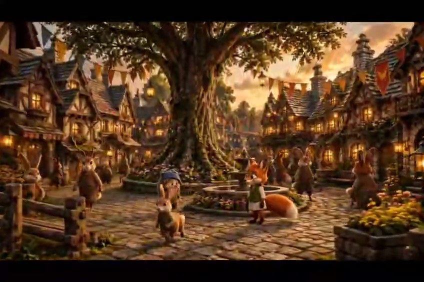
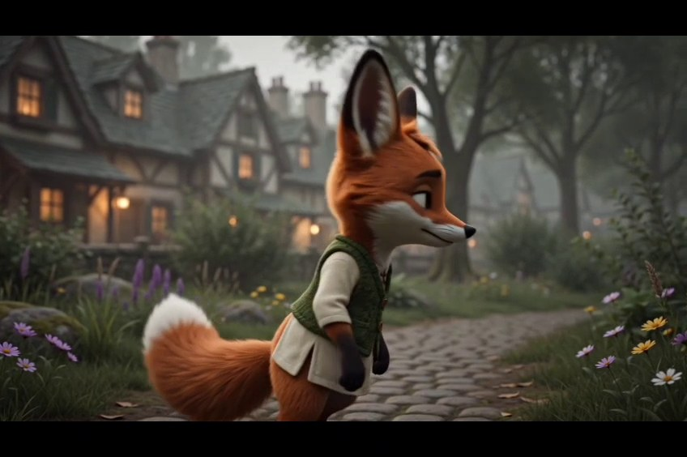
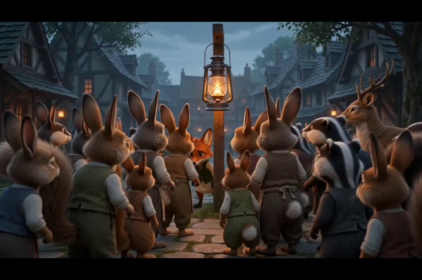
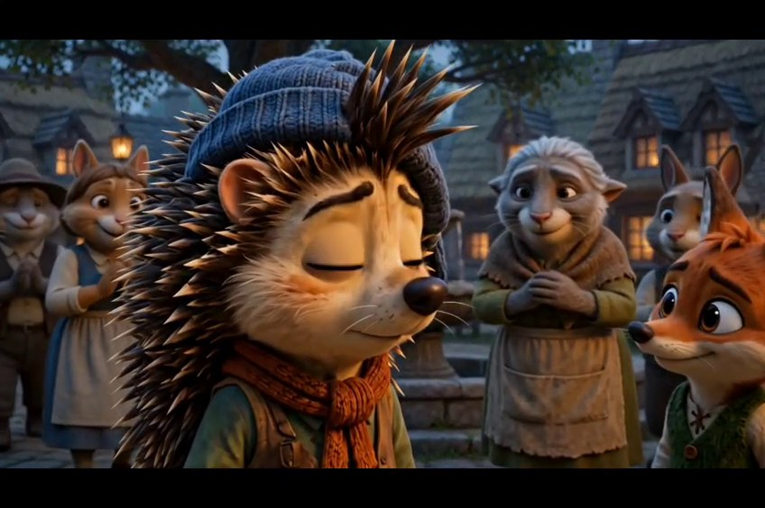

Character Storytelling
Give a character a world to live in.
A character-led generative video concept built around visual personality, environment, movement and narrative progression.
Make the character carry the story.
The objective is to move beyond isolated AI shots and create a character-led visual sequence with a clear sense of place, mood and progression.
The character becomes the anchor: the environment establishes the world, movement creates life, and the sequence gives the viewer a reason to keep watching.
A character is more than a generated image.
The creative language treats the character as a storytelling device rather than a visual asset. Consistent design cues, expressive movement and environmental detail work together to create a world that can support a longer narrative.
That approach also makes the concept adaptable: the same character can become a short film, social series, branded story or recurring creative asset.




From character design to moving story.
Character Direction
Define the character's visual identity, personality, emotional tone and role in the story.
World Building
Create an environment that gives the character context and makes the visual world feel intentional.
Shot Design
Plan framing, perspective, movement and transitions so individual generations work as a sequence.
Generation
Develop the visual shots while managing character appearance, environment and cinematic consistency.
Motion & Edit
Turn generated visuals into a coherent piece through motion, pacing, transitions and editorial rhythm.
Story Expansion
Identify how the character can continue into episodic content, branded storytelling or social formats.
Production stack.
Shellington's current working toolkit includes the platforms below. Exact project-level tool attribution should be confirmed before publication; this page deliberately avoids claiming tools that have not been verified for this sample.
Character-led AI storytelling, not just generation.
This project demonstrates the ability to think in sequences: develop a character, establish a world, direct shots, generate motion and shape the result into a story with commercial and social potential.
Capabilities: AI character creation · world-building · generative video · character consistency · visual storytelling · editing · social/brand adaptation